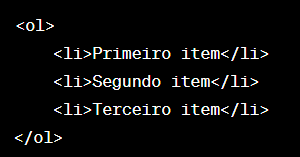
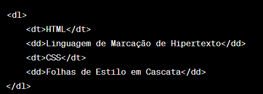

Listas
Breve descrição sobre Listas
Em HTML, você pode criar listas usando três tipos principais de elementos:
listas não ordenadas ( < ul > ), listas ordenadas ( < ol > ), e itens de lista ( < li > ).
Esses elementos permitem organizar informações em formato de lista de diferentes maneiras.
Lista Não Ordenada (< ul >):
Uma lista não ordenada é uma lista de itens que não segue uma ordem específica.
Os itens são geralmente marcados com marcadores, como pontos ou círculos.
Aqui está um exemplo:

- Item 1
- Item 2
- Item 3
Lista Ordenada (< ol >):
Ao contrário das listas não ordenadas, as listas ordenadas têm itens que são numerados sequencialmente.
Os números ou letras indicam a ordem dos itens.
Exemplo:

Isso seria renderizado como:
- Primeiro item
- Segundo item
- Terceiro item
Lista de Definição (< dl >, < dt >, < dd >):
Uma lista de definição é usada para definir termos e fornecer suas definições.
Ela consiste nos elementos:
< dl > (lista de definição),
< dt > (termo) e
< dd > (definição).
Exemplo:

Isso seria renderizado como:
- HTML
- Linguagem de Marcação de Hipertexto
- CSS
- Folhas de Estilo em Cascata
Lista Aninhada:
Você também pode criar listas aninhadas, onde uma lista está dentro de outra.
Isso é feito incluindo elementos de lista dentro de outros elementos de lista.
Exemplo:
Isso seria renderizado como:
- Item 1
- Item 2
- Subitem 2.1
- Subitem 2.2
- Item 3
Listas são uma maneira eficaz de organizar informações em uma página HTML, tornando o conteúdo mais estruturado e legível.
Você pode estilizar listas usando CSS para atender às necessidades específicas de design do seu site.
- Subitem 2.1
- Subitem 2.2